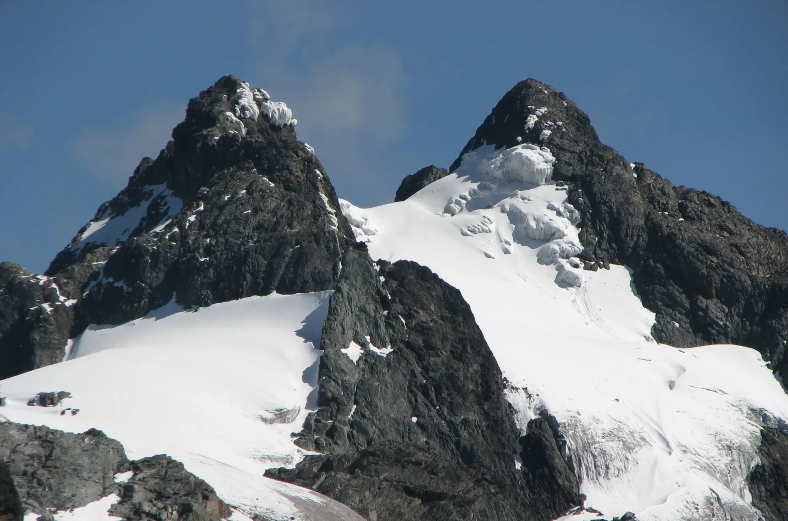

An intimate encounter with mountain gorillas.The powerful Murchison Falls on the Nile River.The serene beauty of Lake Bunyonyi.Vibrant cultural expressions in Uganda.Discover the true source of river nile Beauty of mountain mufumbiro ranges with in KisoroWatch out Uganda's most decorated ladiesFishing activities along the river nileAt the Nile River the vacations become more realityBeauty among the Ugandan Cultures Tourists at the kidepo valley national game parkYoung Gorilla suited at Bwindi Impenetrable National ParkTourists at the marchision falls national game parkExplore the Biggest lake in East Africa L.VictoriaBuffalos with in the Kidepo National Park in the Northern UgandaBeautiful scenery of the Murchison falls rapid springsMore of the Murchison Falls springs viewOstriches along the kidepo valley National Game park with in the Northern UgandaHipoppotamus are the largest covering the Kazinga channel scenery

Best view of the snow peak at the Top of Mountain Rwenzori.Sky Diving at the Niler River is the best experience for the tourists.Rapid water falls that are located along the Longest river in the world.Zip lining done by the tourists in the Mabira Forest located in the central parts of Uganda.Elephants at Kazinga ChannelBest view of the crodiles at the Marchison Falls National Park.A lion captured by a photographer in the kidepo valley national game parkBeautiful giraffes at the kidepo valley national game park in the Northern.Crested Crane birds that symbolise peace in Uganda located at the murchison falls National Game Park.Beautiful sceneries along the Kazinga channel in the western UgandaGorillas at the Bwindi Impenetrable National Park

.jpg)